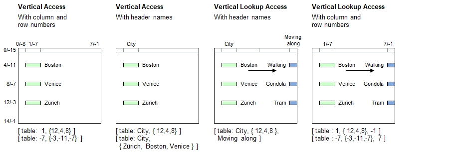

Introduction
Instead of specifying one row number (numeral) or matching contents (literal), a parameter set can be used to specify multiple rows in order to access multiple cells in a specific column at a time. The resulting data read out is a parameter set containing the data which corresponds to the row numbers specified accordingly.
Syntax for Full Table Specification
The table must be referenced inside brackets using a combination of literals and/or numerals and/or parameter sets. These may be constant strings and numbers or expressions providing literals and numerals, as well as parameter sets.
| [ | Table Name | : | Simple Column Specifier | , | Multiple Row Specifier | ] |
|---|---|---|---|---|---|---|
| Must be a literal | - Header name, or | - Parameter set containing | ||||
| - Positive column number, or | row numbers or contents to match | |||||
| - Negative column number | with the data in the table |
Syntax for lookup access (Choose column, followed by one or more rows, and pick up data from a different column):
| [ | Table Name | : | Simple Column Specifier | , | Multiple Row Specifier | , | Simple Column Specifier 2 | ] |
|---|---|---|---|---|---|---|---|---|
| Must be a literal | - Header name, or | - Parameter set containing | - Header name, or | |||||
| - Positive column number, or | row numbers or contents to match | - Positive column number, or | ||||||
| - Negative column number | with the data in the table | - Negative column number |
Lookup access: If a parameter set is encountered in the Simple Column Specifier instead of a simple value (literal or numeral), then the 1st parameter element will be used identifying the row. If it contains no elements, then no lookup can be made and an empty set will be returned.
Principle

Programming examples
table load( table, "Examples\Cities.csv");
echo( [ table: 1, {12,4,8} ] ); // Zürich, Boston, Venice
echo( [ table: -7, {-3,-11,-7} ] );
echo;
echo( [ table: City, {12,4,8} ] );
echo( [ table: City, { Zürich, Boston, Venice } ] ); // Loads own contents
echo( [ table: City, { Zürich, 4, Venice } ] ); // 4 -> Boston
echo;
echo( [ table: City, { } ] ); // Returns empty set
echo;
echo( [ table: City, { 12,4,8 }, Moving along ] ); // Tram, walking, gondola
echo;
echo( [ table : 1, { 12,4,8}, -1 ] );
echo( [ table : -7, {-3,-11,-7}, 7 ] );Output - Staying in San Francisco
{'Zürich','Boston','Venice'}
{'Zürich','Boston','Venice'}
{'Zürich','Boston','Venice'}
{'Zürich','Boston','Venice'}
{'Zürich','Boston','Venice'}
{}
{'Tram','Walking','Gondola'}
{'Tram','Walking','Gondola'}
{'Tram','Walking','Gondola'}